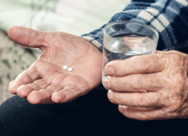
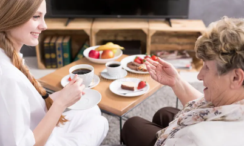

Companionship
Conversation, hobbies, reassurance and meaningful time together.
Our Services
Practical, non-medical help tailored around each person's routine, comfort and independence.
Conversation, hobbies, reassurance and meaningful time together.

Light cleaning, laundry, tidying and comfortable home routines.

Shopping, prescriptions, local errands and appointment support.

Preparing simple meals, hot drinks and gentle routine support.

Kind prompts to support existing medication routines.

Regular visits for reassurance and family peace of mind.